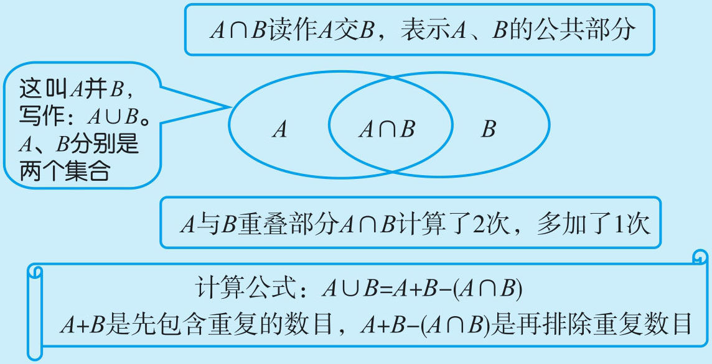
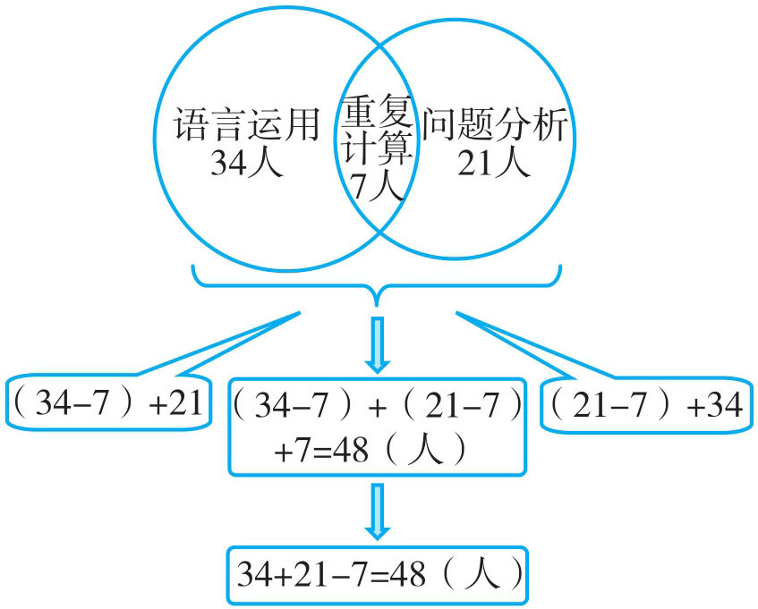
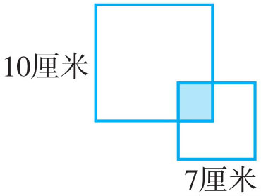
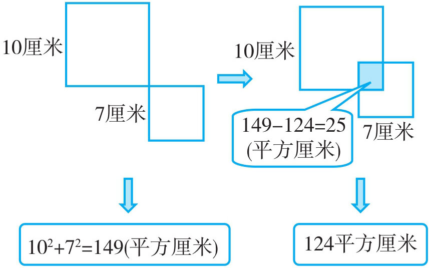
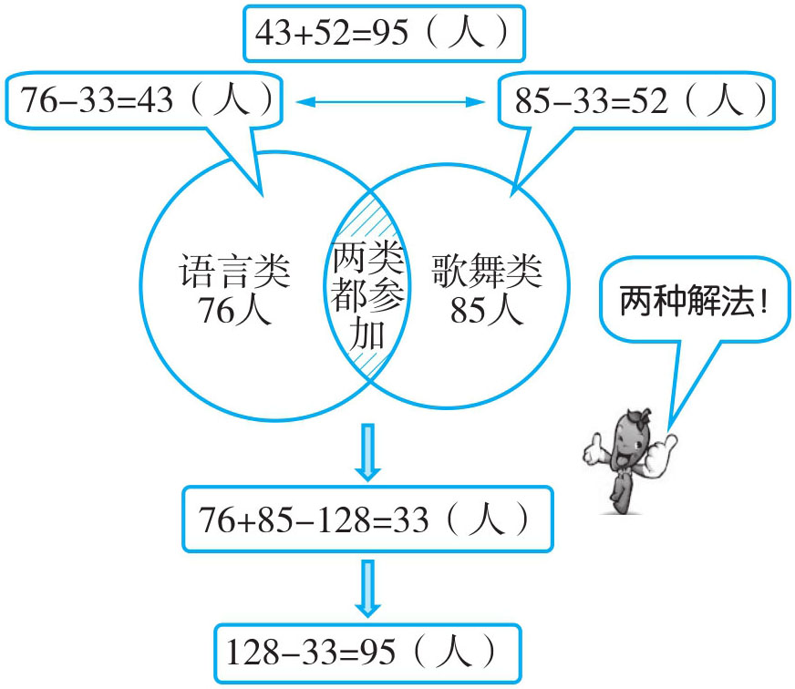
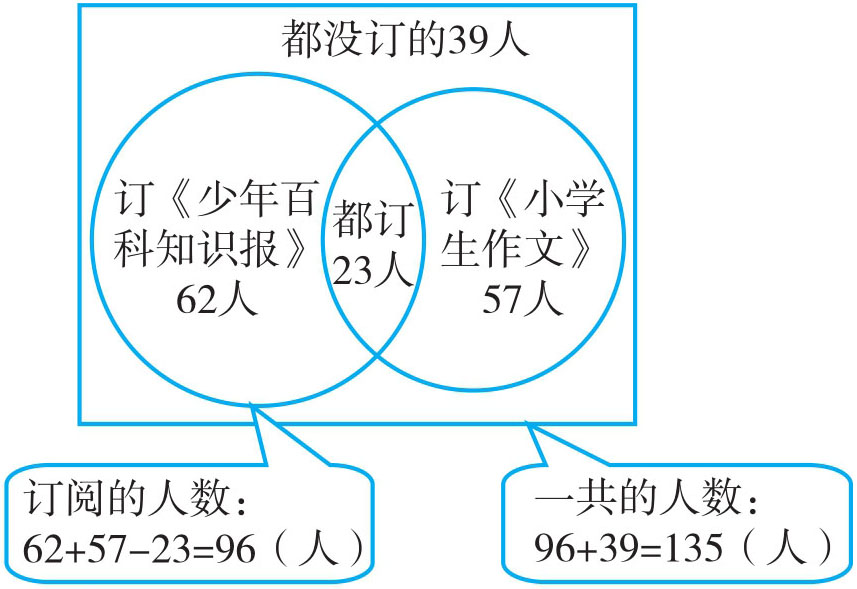
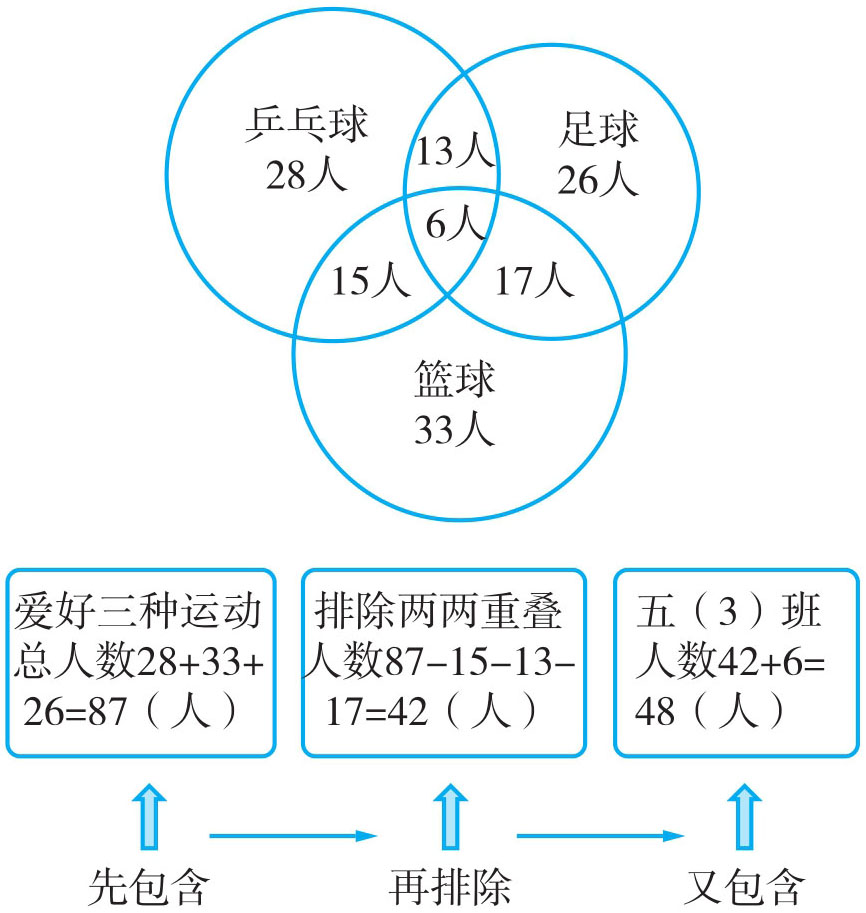
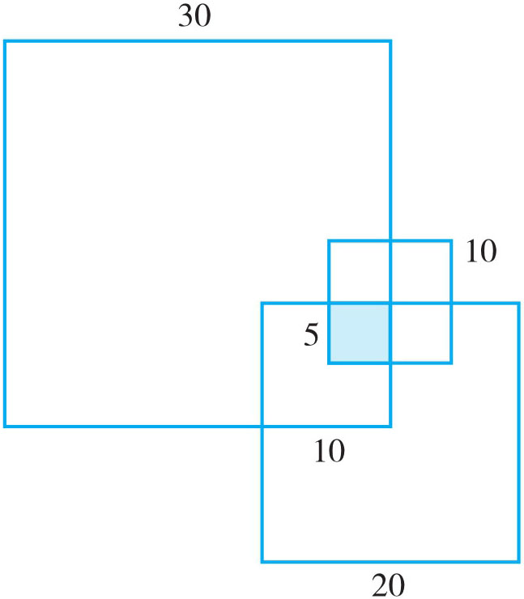

当两个计数部分有重复时，为了不重复计数，应从它们的和（先包含）中减去重复部分（再排除），这一原理我们称为包含排除原理，也称容斥原理。一般用“韦恩图”（文氏图）来表示。

注：除了两量（A 、B ）重叠外，还有三量（A 、B 、C ）重叠问题。
例1 在一次五年级能力测试中，语言运用得“优”的有34人，问题分析得“优”的有21人，两样都得“优”的有7人。问：语言运用与问题分析得“优”的共有多少人？

34+21-7=48（人）
答：语言运用与问题分析得“优”的共有48人。
例2 桌上放着两个正方形，边长分别为10厘米、7厘米，盖住桌面的面积是124平方厘米，求两个正方形重叠部分的面积。


102 +72 =149（平方厘米），149-124=25（平方厘米）。
答：两个正方形重叠部分的面积为25平方厘米。
例3 五年级在六一儿童节时一共有128人参加节目，参加语言类节目的有76人，参加歌舞类节目的有85人，并且每人至少参加一种节目。问：只参加一类节目的有多少人？

方法一：76+85-128=33（人）
128-33=95（人）
答：只参加一类节目的有95人。
方法二：76+85-128=33（人）
(76-33)+(85-33)=43+52=95（人）
答：只参加一类节目的有95人。
例4 五年级订《少年百科知识报》的有62人，订《小学生作文》的有57人，两种都订的有23人，两种都没订的有39人，五年级一共有多少人？

订阅的人数：62+57-23=96（人）
一共的人数：96+39=135（人）
答：五年级一共有135人。
例5 陈和俊老师对五年级某班的全体学生进行了一次体育爱好统计，统计的项目有乒乓球、篮球、足球，已知每人至少有一项爱好。其中爱好乒乓球的有28人，爱好篮球的有33人，爱好足球的有26人，爱好乒乓球、篮球两项的有15人，爱好乒乓球、足球的有13人，爱好篮球、足球的有17人，三个项目都爱好的有6人。请问该班共有多少人？

28+33+26=87（人）
87-15-13-17=42（人）
42+6=48（人）
答：该班共有48人。
1．某班有48人参加活动，参加经典诵读的有36人，参加器乐合奏的有22人，并且每人至少参加了一个项目。该班两个项目都参加的有多少人？
2．某班买《小学生作文》的有32人，买《图解小学数学训练题》的有30人，两本书都买的有18人。问：该班共有多少名学生？
3．某班有28人喜欢音乐，25人喜欢美术，音乐和美术都喜欢的有8人，全班喜欢音乐和美术的共有多少人？
4．三年级一班有47名学生，有25人参加了体育队，还有一部分参加了合唱队，两样都参加的有12人，每人至少参加了一个项目。问：参加合唱队的有多少人？
5．五年级四班在期中检测中，有35人语文得优，有31人数学得优，两科都得优的有26人，两科都未得优的有3人。该班共有多少人？
6．五年级共有男生53人，已知参加唱歌的有33人，参加跳舞的有28人，两样都参加的有12人。问：两样都没参加的有多少人？
7．求出分母是111的最简真分数的和。
8．某年级的课外活动小组分语、数、外三个小组，参加语、数、外三个小组的人数分别是30人，28人和21人。同时参加语数、数外、语外小组的人数分别是6人，9人和7人。三个小组都参加的有3人。问：这个年级参加课外小组的共有多少人？
9．边长为30厘米，20厘米，10厘米的三个正方形互相重叠地放在桌上。求：这三个正方形覆盖的桌面的面积是多少平方厘米？
